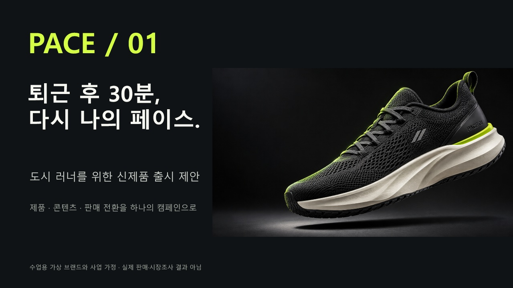
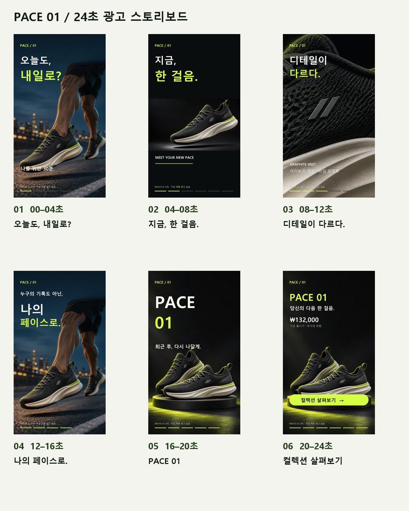
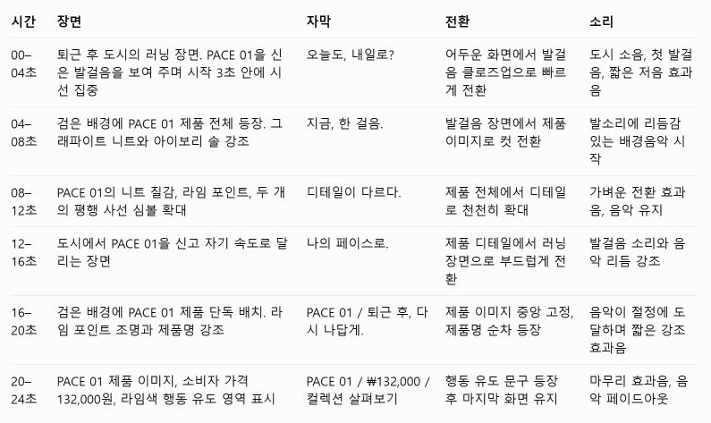
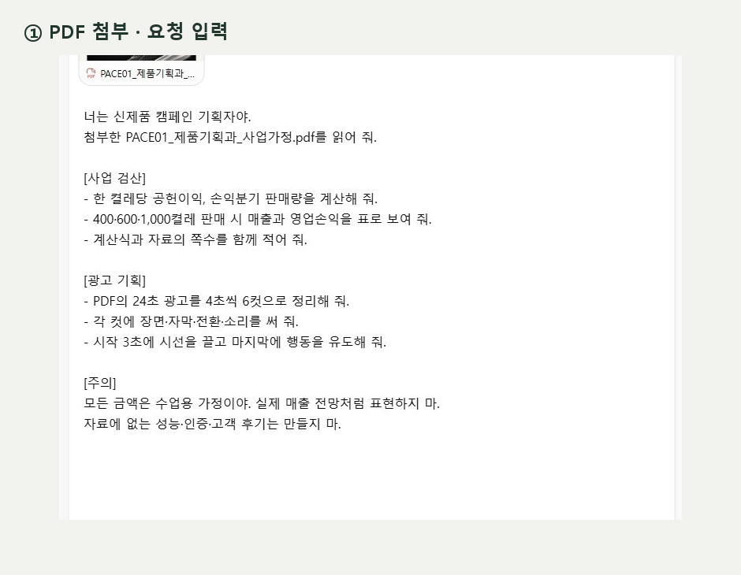
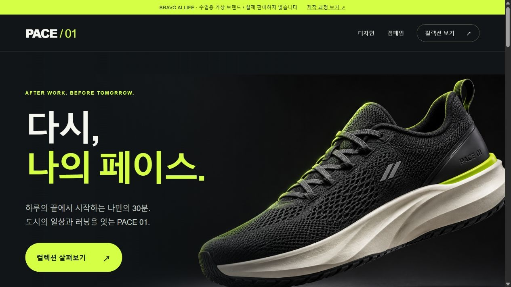
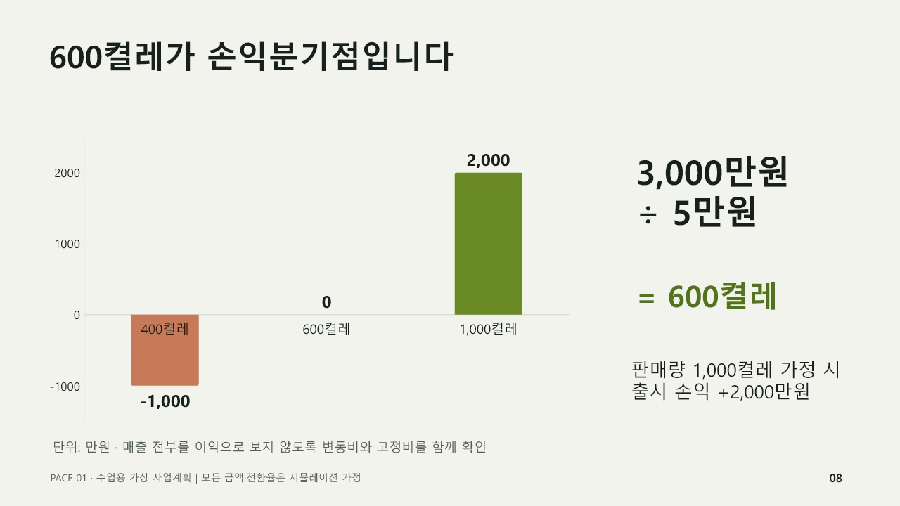

가상 러닝화 PACE 01의 사업설명회 → 스토리보드 → 광고 쇼츠 → 랜딩페이지를 순서대로 확인합니다.
02. 사업설명회처럼 발표하세요
12장 발표 예시입니다. 제품 사진, 비용 구성, 단위 손익, 판매 시나리오 차트를 함께 읽어 보세요.

1 / 12
슬라이드 1슬라이드 2슬라이드 3슬라이드 4슬라이드 5슬라이드 6슬라이드 7슬라이드 8슬라이드 9슬라이드 10슬라이드 11슬라이드 12Codex의 Presentations로 별도 제작한 완성 예시입니다. 위 ChatGPT 채팅이 PPT 파일을 직접 만들었다는 뜻은 아닙니다. 숫자는 PDF와 독립 검산했습니다.
발표자료 제작 요청
첨부한 PACE01_제품기획과_사업가정.pdf와 제품 사진으로
사업설명회 발표자료 12장을 PowerPoint 파일로 만들어 줘.
[들어갈 내용 · 한 장에 하나씩, 이 순서로]
1. 표지: 제품 이름과 한 줄 소개
2. 누구에게 파는 제품인지
3. 제품 특징 두 가지
4. 가격과 전하고 싶은 말
5. 방문자 수와 예상 판매량
6. 출시 예산을 어디에 쓰는지
7. 한 켤레를 팔면 얼마가 남는지
8. 몇 켤레를 팔아야 손해가 아닌지
9. 6주 일정
10. 24초 광고의 여섯 장면
11. 공개하기 전에 확인할 것
12. 마지막으로 승인받을 일
[보기 좋게]
- 어두운 회색 바탕에 연두색으로 강조하고, 제품 사진을 크게 넣어 줘.
- 6번은 원 그래프, 7번과 8번은 막대 그래프로 보여 줘.
- 그래프마다 단위와 ‘수업용 가정’이라는 표시를 넣어 줘.
- 글자가 잘리지 않게 하고, 발표할 때 읽을 설명은 발표자 메모에 써 줘.
[꼭 지킬 것]
- 한 켤레에 남는 돈 50,000원, 손해가 아닌 판매량 600켤레가 PDF와 같은지 확인해 줘.
- PDF에 없는 시장 규모, 고객 후기, 성능 숫자는 만들지 마.
03. 광고는 이야기부터 만드세요
망설임 → 첫걸음 → 제품 디테일 → 나의 페이스 → 제품 → 행동 안내. 여섯 컷의 역할을 먼저 정합니다.

스토리보드 요청
[목표]
가상 러닝화 PACE 01의 24초 광고용 쇼츠를 기획해 줘.
[이야기]
퇴근 후에도 망설이던 사람이 자신의 페이스로 첫걸음을 내딛는 이야기야.
첫 3초는 질문으로 관심을 끌고, 마지막은 제품과 행동 안내로 마쳐 줘.
[규격]
세로 9:16, 총 24초, 4초씩 6컷.
[출력]
시간 / 장면 / 카메라 / 자막 / 전환 / 소리를 표로 작성해 줘.
그다음 각 컷의 영상 생성 프롬프트를 따로 써 줘.
[유지할 것]
첨부한 제품 사진의 그래파이트 니트·아이보리 솔·라임 포인트를 유지해 줘.
다른 브랜드 사진이나 로고는 사용하지 마.
기록 향상·부상 예방 등 검증하지 않은 효능은 쓰지 마.
마지막 문구는 “컬렉션 살펴보기”로 해 줘.
실제 답변을 고친 후속 요청
사업 계산은 맞아. 하지만 광고 부분에 다른 브랜드 신발 사진이 섞였고, 변경 과제를 현재 조건으로 적용했어.
[수정]
외부 이미지와 다른 브랜드를 모두 빼 줘.
첨부한 PDF의 가상 제품 PACE 01만 기준으로 다시 작성해 줘.
변경 과제는 아직 적용하지 마.
[출력]
6컷을 시간 / 장면 / 자막 / 전환 / 소리의 표로만 보여 줘.
이미지는 삽입하지 마. 마지막 문구는 “컬렉션 살펴보기”로 해 줘.

ChatGPT가 수정한 답변입니다. 다음 GIF는 입력·검산·수정 결과 화면 3장을 순서대로 이은 것입니다. 기다리는 시간은 뺐습니다.

아래 완성 영상과 맞춘 제작용 보드입니다. AI가 다른 브랜드 사진을 제안하면 그대로 사용하지 말고 제공한 제품 이미지로 수정하세요.
04. 같은 제품으로 장면을 만드세요
제품 이미지 제작 요청
가상 러닝화 PACE 01의 프리미엄 광고 사진을 만들어 줘.
제품: 그래파이트 니트 갑피, 아이보리 솔, 라임색 뒤꿈치 포인트,
측면의 은색 평행 사선 두 개. 다른 브랜드 로고는 사용하지 마.
장면: 차콜 스튜디오에서 신발 한 켤레가 떠 있는 제품 사진.
조명: 가장자리를 강조하는 빛, 자연스러운 그림자, 재질이 보이는 디테일.
구도: 가로 16:9, 제품은 오른쪽, 왼쪽은 제목을 올릴 여백.
이미지 안에 가격·광고 문구·워터마크는 넣지 마.
이미지 4장은 OpenAI ImageGen으로 제작했습니다. 아래 영상 생성 요청은 Flow에서 직접 실행해 볼 실습안입니다.
Flow에서 동작 클립 만들기
첨부한 PACE 01 러닝 장면을 시작 이미지로 사용해 줘.
[장면]
도심 저녁, 러너의 발이 앞으로 한 걸음을 내딛는다.
낮은 위치의 카메라가 발과 같은 속도로 부드럽게 이동한다.
[유지]
신발 색상·사선 심볼·솔 모양을 유지한다.
발과 신발이 서로 관통하거나 제품 형태가 변하지 않게 한다.
[규격]
세로 9:16. 지원되는 클립 길이로 생성하고 편집에서 4초를 사용한다.
자막·로고·음악은 넣지 않는다. 편집 단계에서 추가한다.
05. 24초 광고를 재생하세요
AI 정지 이미지 4장을 확대·이동하고 자막·오리지널 합성 음향을 편집한 1080×1920, 30fps, 24초 MP4입니다. 실제 달리기 동작을 생성한 Flow 영상과 구분합니다.
편집 가능한 도구에 전달할 요청
[첨부 자료]
PACE 01 제품 이미지 4장과 6컷 스토리보드를 사용해 줘.
[편집 요청]
24초 세로 광고를 만들어 줘. 각 컷은 4초야.
이미지 확대·이동, 큰 자막, 박자에 맞춘 전환을 넣어 줘.
마지막에는 PACE 01 / 132,000원 / 컬렉션 살펴보기를 표시해 줘.
[출력]
1080×1920, 30fps MP4와 수정할 수 있는 편집 원본을 만들어 줘.
음악은 사용 권한이 확인된 것만 써 줘.
[확인]
정지 이미지 애니메이션인지 실제 생성 동작 영상인지 구분해 줘.
현재 도구가 MP4 편집·출력을 지원하지 않으면 완료했다고 하지 말고,
편집 프로그램에서 실행할 컷별 지시와 자막 파일을 제공해 줘.
ChatGPT가 영상 편집까지 하나요?
ChatGPT는 영상 첨부·분석을 지원하지만, 일반 채팅에서 컷 편집부터 MP4 출력까지 항상 된다고 보장할 수는 없습니다. 먼저 기획·자막·편집 지시를 받고, 실제 편집 가능한 도구에서 실행 여부와 결과 파일을 확인하세요. 이 MP4는 Codex가 로컬 편집 도구로 제작했습니다.
OpenAI 영상 입력 안내 · 계정·플랫폼에 따라 지원 방식이 다를 수 있습니다.
06. 광고에서 제품 페이지로 연결하세요

제품 사진 전환 → 사이즈 선택 → 선택 결과 확인 → 광고 재생을 직접 눌러 보세요.
랜딩페이지 제작 요청
가상 러닝화 PACE 01을 소개하는 웹페이지를 만들어 줘.
함께 준 제품 기획 PDF, 제품 사진 4장, 24초 광고 영상을 사용해 줘.
[화면 순서 · 위에서 아래로]
1. 큰 제품 사진과 제목 “퇴근 후 30분, 다시 나의 페이스”
2. 소재와 디자인을 보여 주는 사진
3. 눌러서 재생하는 24초 광고
4. 사진 바꿔 보기, 사이즈 고르기, 고른 사이즈 보여 주기
[보기 좋게]
어두운 회색 바탕, 연두색 강조, 아이보리 글자. 글자는 크게, 여백은 넉넉하게.
컴퓨터와 휴대폰에서 모두 읽기 편하게 만들어 줘.
버튼은 키보드로도 누를 수 있게 하고, 고른 것이 표시되게 해 줘.
[꼭 지킬 것]
수업용 가상 브랜드이며 실제로 판매하지 않는다고 적어 줘.
가격은 132,000원.
결제, 회원가입, 개인정보 입력 칸은 넣지 마.
지어낸 후기, 마감이 임박했다는 시계, 확인하지 않은 성능 숫자는 넣지 마.
[다 만든 뒤]
사진 바꾸기, 광고 재생, 사이즈 고르기를 직접 눌러 확인해 줘.
웹페이지 파일과 사진 파일을 한 폴더에 모아 줘.
Codex로 구현하고 브라우저에서 검증한 완성 예시입니다. Gemini Canvas의 실제 출력으로 표시하지 않습니다. 실제 주문·결제는 없습니다.
07. 조건 하나를 바꾸고 결과를 확인하세요

후속 수정 요청
같은 자료에서 판매 수량을 800켤레로 바꿔 줘.
1. 800켤레를 팔았을 때의 매출, 드는 돈, 남는 돈을 다시 계산해 줘.
2. 발표자료 8번의 막대 그래프에 800켤레를 추가해 줘.
3. 광고와 제품 소개 페이지의 마지막 버튼 글자를 “디자인 자세히 보기”로 통일해 줘.
제품 이름, 가격, 색상과 다른 사업 가정은 그대로 둬.
바뀐 부분과 그대로 둔 부분을 짧게 설명해 줘.
800켤레의 확인값: 순매출 96,000,000원, 변동비 56,000,000원, 고정비 30,000,000원, 손익 10,000,000원. 영상 마지막 문구와 웹페이지 버튼도 서로 일치하는지 확인하세요.